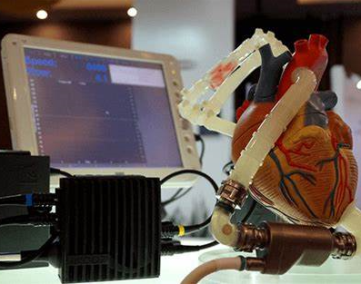

| TÉCNICA PARA SU FABRICACIÓN |  | • Bioingenieros de la (SEAS) han podido desarrollar el primer modelo biohíbrido de ventrículos humanos con células cardíacas que laten alineadas helicoidalmente. Esto fue posible gracias a un nuevo método de fabricación textil aditiva, el Focused Rotary Jet Spinning (FRJS), que permitió la fabricación de alto rendimiento de fibras alineadas helicoidalmente con diámetros que van desde varios micrómetros a cientos de nanómetros. Aquellas fibras dirigen la alineación de las células, lo que permite la formación de estructuras controladas de ingeniería de tejidos. |